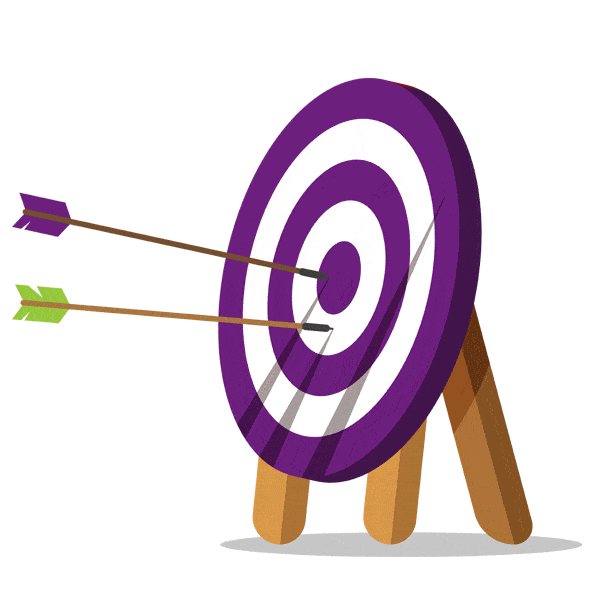
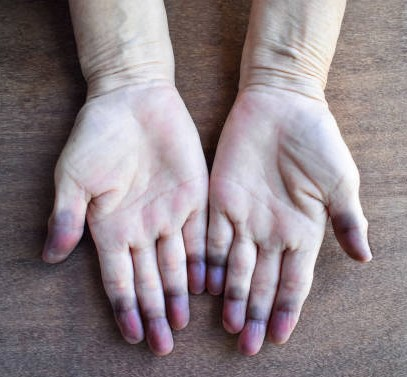
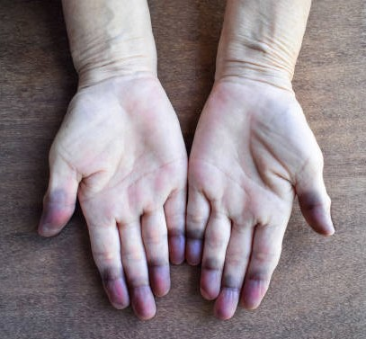

L’examen général est la première étape de toute évaluation clinique.
Il permet d’obtenir une vue d’ensemble de l’état du patient avant d’aborder l’examen des différents appareils. Il repose sur l’observation, la rigueur et le respect du malade.
Objectifs de l’examen général

Évaluer l’état global du patient : vitalité, nutrition, conscience, hygiène.
Déceler des signes physiques généraux utiles pour orienter le diagnostic.
Identifier les urgences vitales ou les signes d’alarme.
Préparer l’examen détaillé des appareils.
Règles générales
Avant tout examen :
Se présenter et expliquer le déroulement de l’examen.
Respecter la pudeur et l’intimité du malade.
Assurer un environnement calme, bien éclairé et propre.
Laver les mains avant et après chaque patient.
Être méthodique et comparer les deux côtés du corps.
Matériel nécessaire
Stéthoscope
Tensiomètre
Thermomètre
Lampe stylo
Ruban à mesurer / toise
Balance
Saturomètre
Marteau réflexe
Gants à usage unique
Solution hydro-alcoolique
Étapes de l’examen général
Inspection générale:
Observer le patient avant tout contact physique :
État de conscience : alerte, somnolent, confus, comateux.
 Avant tout examen :
Avant tout examen :

 
